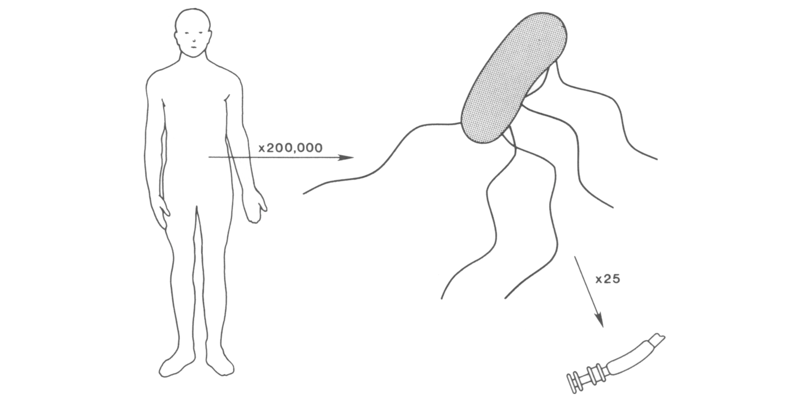

https://bit.ly/MCB294_Bacteria_2022
Physicists look at bacterial chemotaxis
Aravi Samuel, 2022

Howard Berg (1934-2021)
._Natuurkundige_te_Delft_Rijksmuseum_SK-A-957.jpeg)
"In the year 1657, I discovered very small creatures living in rainwater."
Anthony von Leeuwenhoek
1632-1723
Delft, Dutch Republic
Johannes Vermeer, 1632-1674, Delft
The Astronomer, 1668
The Geographer, 1669
Escherichia coli
Size matters
Comparison of the size of man, E. coli, and part of its flagellar motor.
Biased random walks

Wild-type E. coli cell executing a random walk in a homogeneous medium.
Planar projections of a 3D track
Flagella rotate


CCW rotation → run
CW rotation → tumble
"If bacterial flagella rotate, the structures at the base of the flagellum
deserve more attention than they have received thus far."
-Howard Berg
The impulse response

Signal transduction from receptors to motors

Adaptation mutants
Impulse response (A, above)
and step response (B, below)
in strains deleted for cheRcheB
The bacterial flagellar motor

Fluctuation analysis of motor speed

Torque-generating units step independently

Variance predicts numbers of steps
\[ \theta = \phi \times n \]
Variance predicts numbers of steps
\[ \theta = \phi \times n \]
\[ \left< \theta \right> = \phi \times \left< n \right> \]
Variance predicts numbers of steps
\[ \theta = \phi \times n \]
\[ \left< \theta \right> = \phi \times \left< n \right> \]
\[ \left< \theta^2 \right> - \left< \theta \right>^2 = \phi^2 \times \left( \left< n^2 \right> - \left< n \right> ^2 \right) \]
Variance predicts numbers of steps
\[ \theta = \phi \times n \]
\[ \left< \theta \right> = \phi \times \left< n \right> \]
\[ \left< \theta^2 \right> - \left< \theta \right>^2 = \phi^2 \times \left( \left< n^2 \right> - \left< n \right> ^2 \right) \]
\[ \left< n^2 \right> - \left< n \right> ^2 = \left< n \right> \]
Variance predicts numbers of steps
\[ \theta = \phi \times n \]
\[ \left< \theta \right> = \phi \times \left< n \right> \]
\[ \left< \theta^2 \right> - \left< \theta \right>^2 = \phi^2 \times \left( \left< n^2 \right> - \left< n \right> ^2 \right) \]
\[ \left< n^2 \right> - \left< n \right> ^2 = \left< n \right> \]
\[ \therefore \phi=\frac{\left< \theta^2 \right> - \left< \theta \right> ^2}{\left< \theta \right>} \]
Cryo-electron microscopy of the rotor
Cryo-electron microscopy of the "stator"

ATP synthase

A model for torque generation and switching

Polarized photobleaching → polarization-dependent fluorescence

Polarized photobleaching → polarization-dependent fluorescence

Direct observation of C-ring rotation
Motivation

"Is any of this knowledge practical? The reading of the external environment by cells of all types, leading to responses in growth or motility, is fundamental to life. Bacterial chemotaxis provides a model for learning how such processes can work. However this is not what has motivated me. I have wanted to know, simply, how such a tiny creature does its thing. How, for example, has it solved the problem of finding greener pastures within the constraints imposed by physics? This is a matter of curiosity. Curiosity is the driving force of basic science."
-Howard Berg
Acknowledgments

Alina Vrabioiu

Gabriel Hosu

Rowland Institute at Harvard